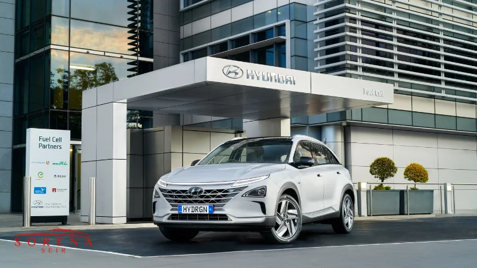

کمپانی ژاپنی نیسان موتور فعالیت خود را در سال 1933 در شهر یوکوهاما ژاپن آغاز کرد ولی در حال حاضر در بسیاری از کشورها حضور قوی در بازار فروش خودرو دارد. این شرکت در زمینه طراحی و تولید انواع خودروی سواری، کامیون و اتوبوس و همچنین سایر محصولات مرتبط با خودرو مانند تولید قطعه فعالیت میکند. نیسان در بیش از 20 کشور جهان امکان تولید محصول و در بیش از 160 کشور مختلف دفتر فروش فعال دارد. محصولات متنوع این خودروساز از نیسان لیف 100 درصد برقی تا نیمسو فوقالعاده کارآمد را شامل میشود.
